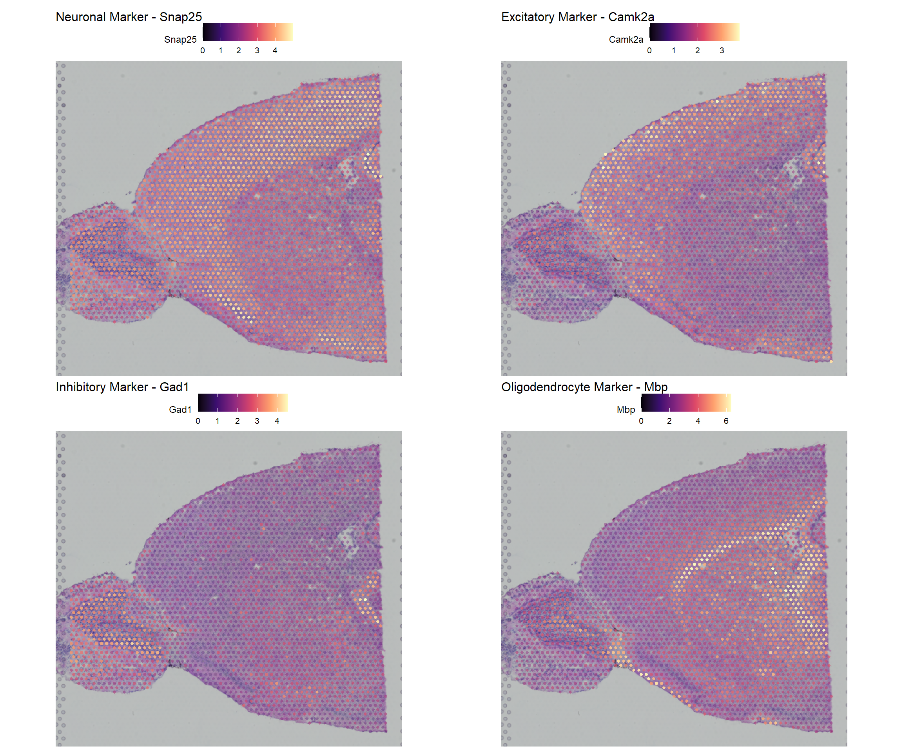
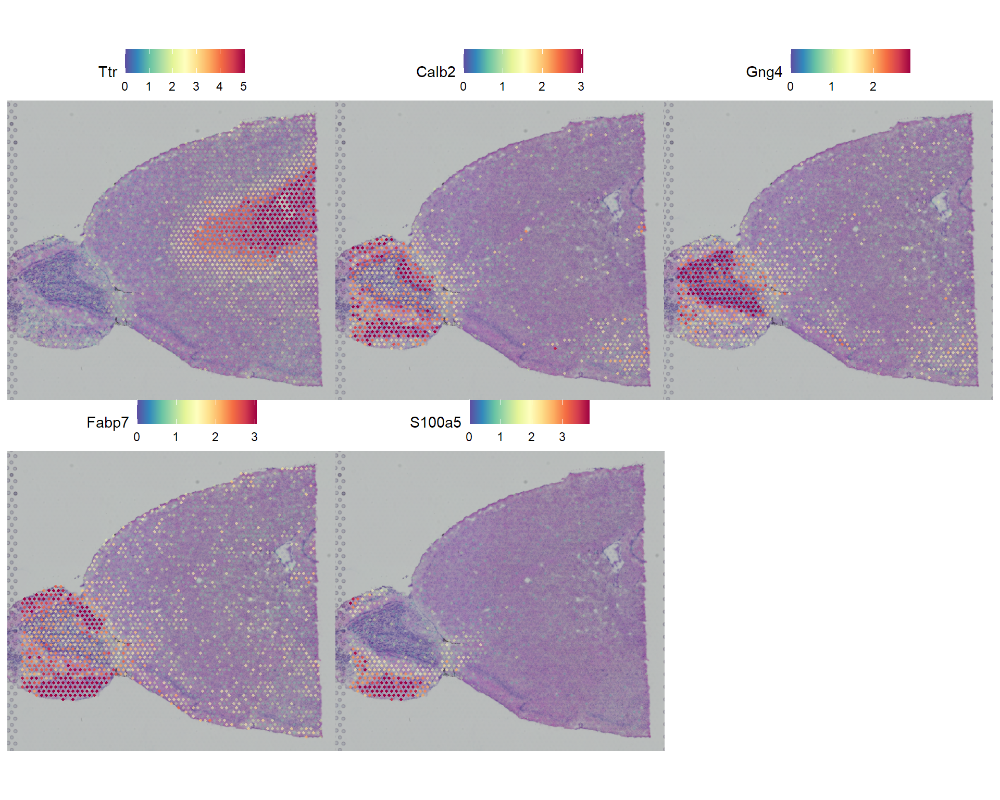
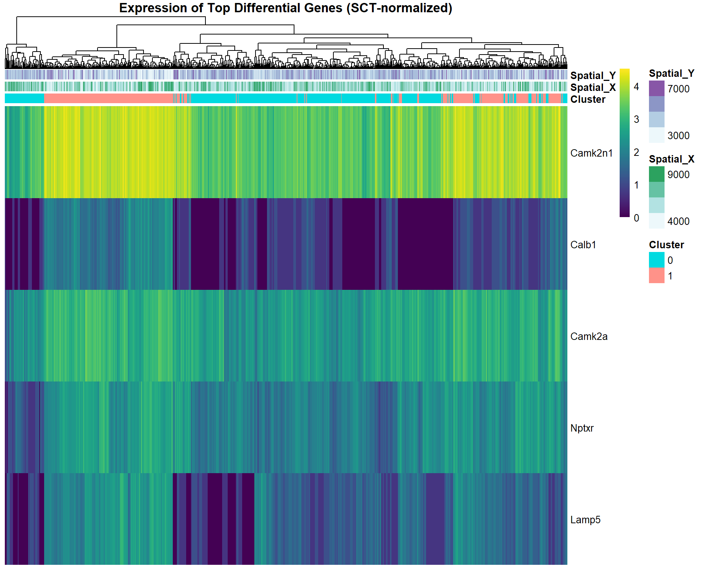
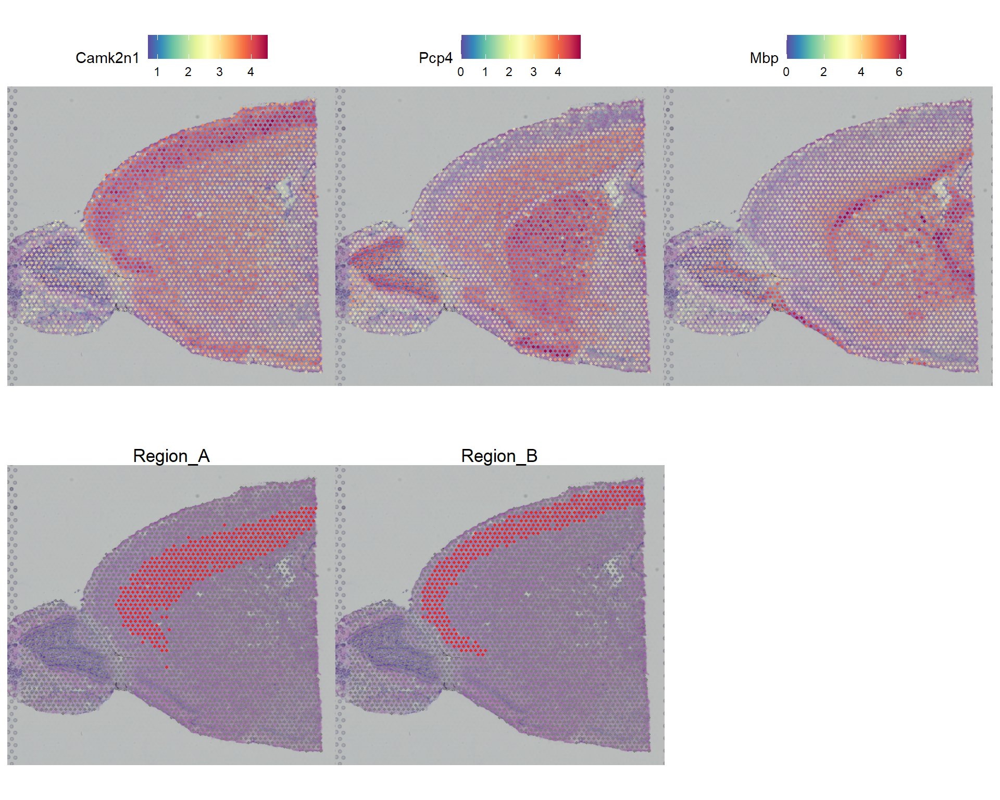
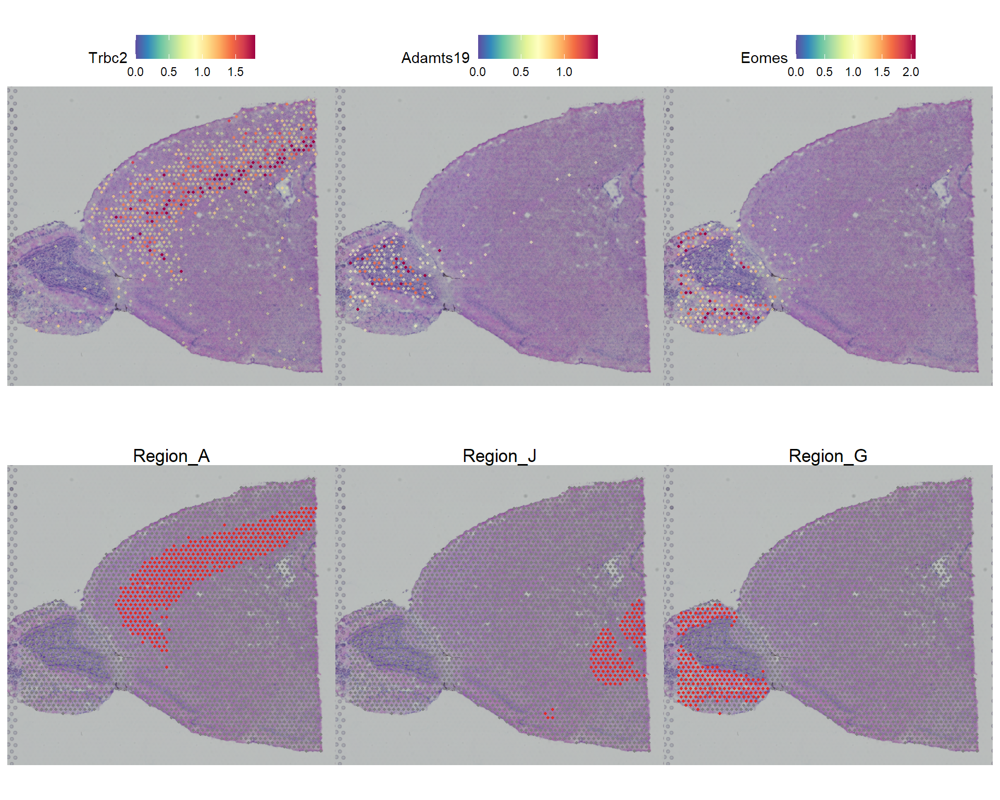
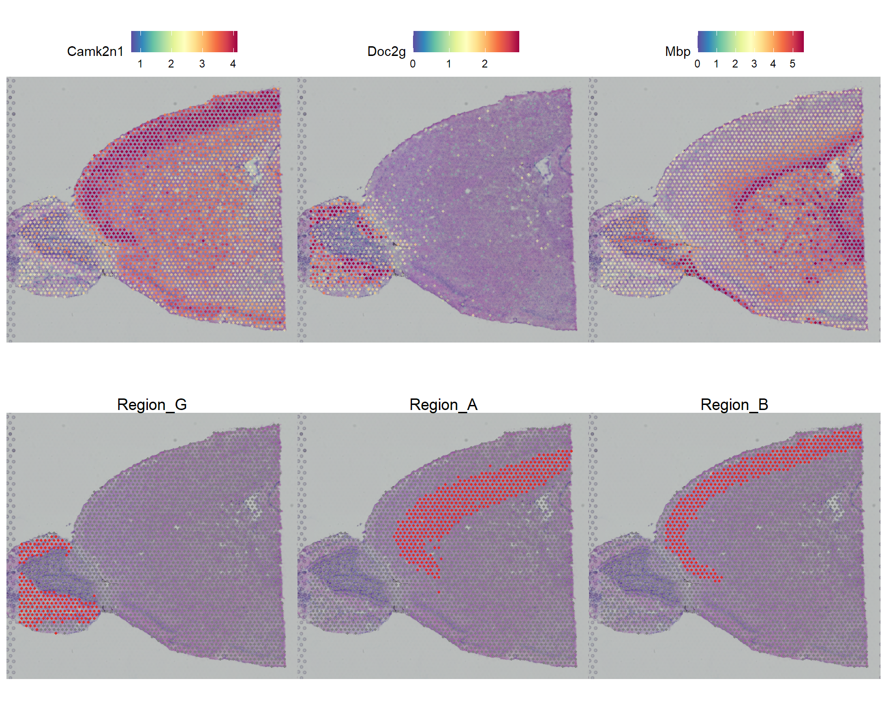

Chapter 2 Within-Slice Spatial Analysis
# Install packages if not already installed
# install.packages(c("Seurat", "Matrix", "ggplot2", "viridis", "patchwork", "dplyr"))
# install.packages(c("sp", "spdep", "spatstat", "pheatmap", "sctransform"))
# SeuratData::InstallData("stxBrain.SeuratData")
# devtools::install_github('satijalab/seurat-data')
# Load essential libraries
library(Seurat) # v5.3.1 - main spatial analysis package
library(ggplot2) # for visualization
library(dplyr) # for data manipulation
library(Matrix) # for sparse matrices
library(viridis) # for color palettes
library(patchwork) # for combining plots
library(spdep) # for spatial statistics
library(pheatmap) # for heatmaps
library(sctransform) # for SCTransform normalization
library(future) # for parallel processing
library(knitr) # for visualising tables
# Set up parallel processing for faster computation
plan("multisession", workers = 4)
# Increase the memory limit for parallel processing
options(future.globals.maxSize = 8000 * 1024^2) # Set to 4GB
# Set seed for reproducibility
set.seed(42)This chapter starts from the SCTransform-normalized and clustered object produced by the quality-control chapter.
2.1 1 Gene Expression Patterns
2.1.1 1.1 Spatial Expression of Top Expressed Brain Markers
neuronal markers: Snap25, Rbfox3, Tubb3, Camk2a, Nrgn, Syp, Syn1
excitatory_genes: Slc17a7, Slc17a6, Camk2a, Gria1, Gria2
inhibitory_genes: Gad1, Gad2, Slc6a1, Pvalb, Sst, Vip
myelin_genes: Mbp, Plp1, Mog, Olig2, Olig1
2.1.2 1.2 Select top Genes
From each category above we select a gene with the highest expression across spots. If none found we fallback to top expressed genes in the slice.
# Get all available genes
all_genes <- rownames(seurat_obj)
# These are genes known to have distinct spatial expression in brain tissue
# Look for key brain marker genes
neuronal_genes <- grep("^(Snap25|Rbfox3|Tubb3|Camk2a|Nrgn|Syp|Syn1)", all_genes, value = TRUE, ignore.case = T)
excitatory_genes <- grep("^(Slc17a7|Slc17a6|Camk2a|Gria1|Gria2)", all_genes, value = TRUE, ignore.case = T)
inhibitory_genes <- grep("^(Gad1|Gad2|Slc6a1|Pvalb|Sst|Vip)", all_genes, value = TRUE, ignore.case = T)
myelin_genes <- grep("^(Mbp|Plp1|Mog|Olig2|Olig1)", all_genes, value = TRUE, ignore.case = T)
astrocyte_genes <- grep("^(Gfap|Aqp4|Slc1a3|Slc1a2|Aldh1l1)", all_genes, value = TRUE, ignore.case = T)
microglia_genes <- grep("^(Cx3cr1|Iba1|Aif1|Tmem119|P2ry12)", all_genes, value = TRUE, ignore.case = T)
# Function to select best available gene from a list
select_best_gene <- function(gene_list, seurat_obj) {
if(length(gene_list) == 0) return(NULL)
# Get expression levels for all genes in the list
expr_data <- GetAssayData(seurat_obj, assay = "SCT", layer = "data")
available_genes <- gene_list[gene_list %in% rownames(expr_data)]
if(length(available_genes) == 0) return(NULL)
# Calculate mean expression for each gene
mean_expr <- sapply(available_genes, function(g) mean(expr_data[g, ]))
# Select gene with highest mean expression
best_gene <- names(sort(mean_expr, decreasing = TRUE))[1]
return(best_gene)
}
# Select representative genes for different brain cell types/regions
selected_genes <- list(
neuronal = select_best_gene(neuronal_genes, seurat_obj),
excitatory = select_best_gene(excitatory_genes, seurat_obj),
inhibitory = select_best_gene(inhibitory_genes, seurat_obj),
oligodendrocyte = select_best_gene(myelin_genes, seurat_obj)
)
# Remove NULL entries
selected_genes <- selected_genes[!sapply(selected_genes, is.null)]
# If we couldn't find specific brain genes, use top variable features
if( length(selected_genes) < 4) {
print("Using top variable features as some brain-specific genes were not found...")
top_var_genes <- VariableFeatures(seurat_obj)[1:8]
# Add additional genes to reach 4 total
additional_genes <- top_var_genes[!top_var_genes %in% unlist(selected_genes)]
if(length(selected_genes) < 4) {
remaining_needed <- 4 - length(selected_genes)
for(i in 1:remaining_needed) {
if(i <= length(additional_genes)) {
selected_genes[[paste0("variable_", i)]] <- additional_genes[i]
}
}
}
}
# Display selected genes
selectGeneTable <- data.frame()
for(i in 1:length(selected_genes)) {
gene_name <- selected_genes[[i]]
gene_type <- names(selected_genes)[i]
# Get expression statistics
expr_data <- GetAssayData(seurat_obj, assay = "SCT", layer = "data")
gene_expr <- expr_data[gene_name, ]
mean_expr <- round(mean(gene_expr), 3)
pct_expressing <- round(100 * sum(gene_expr > 0) / length(gene_expr), 1)
tmp <- data.frame(Type=gene_type, Name=gene_name, `Mean Expr`=mean_expr, `% expressing`=paste0(pct_expressing, "%"), check.names = F )
selectGeneTable <- rbind(selectGeneTable, tmp)
}
selectGeneTable %>% knitr::kable()| Type | Name | Mean Expr | % expressing |
|---|---|---|---|
| neuronal | Snap25 | 3.525 | 100% |
| excitatory | Camk2a | 2.081 | 98.9% |
| inhibitory | Gad1 | 1.923 | 95.3% |
| oligodendrocyte | Mbp | 3.680 | 99.9% |
2.1.3 1.3 Visualise Top Expressed Genes
# Function to create spatial gene expression plot using Seurat
plot_spatial_gene <- function(seurat_obj, gene_name, title = NULL) {
if(!gene_name %in% rownames(seurat_obj)) {
print(paste("Gene", gene_name, "not found in dataset"))
return(NULL)
}
# Use Seurat's SpatialFeaturePlot
p <- SpatialFeaturePlot(
seurat_obj,
features = gene_name,
pt.size.factor = 1.6, # Adjust spot size
alpha = c(0.1, 1) # Transparency range
) +
scale_fill_viridis_c(option = "magma") + # Use magma color palette
theme(
plot.title = element_text(size = 12),
legend.text = element_text(size = 8),
legend.title = element_text(size = 9)
)
# Add custom title if provided
if(!is.null(title)) {
p <- p + ggtitle(paste(title, "-", gene_name))
}
return(p)
}
# Create individual plots for selected genes
plot_list <- list()
plot_titles <- c("Neuronal Marker", "Excitatory Marker", "Inhibitory Marker", "Oligodendrocyte Marker")
for(i in 1:min(4, length(selected_genes))) {
gene_name <- selected_genes[[i]]
title <- if(i <= length(plot_titles)) plot_titles[i] else paste("Gene", i)
plot_obj <- plot_spatial_gene(seurat_obj, gene_name, title)
if(!is.null(plot_obj)) {
plot_list[[i]] <- plot_obj
}
}
# Remove NULL plots
plot_list <- plot_list[!sapply(plot_list, is.null)]
# Create combined plot using patchwork
if(length(plot_list) >= 4) {
gene_plots <- (plot_list[[1]] | plot_list[[2]]) / (plot_list[[3]] | plot_list[[4]])
} else if(length(plot_list) == 3) {
gene_plots <- plot_list[[1]] / (plot_list[[2]] | plot_list[[3]])
} else if(length(plot_list) == 2) {
gene_plots <- plot_list[[1]] | plot_list[[2]]
} else if(length(plot_list) == 1) {
gene_plots <- plot_list[[1]]
} else {
# Fallback: use top variable features
print("Creating plots with top variable features...")
top_genes <- VariableFeatures(seurat_obj)[1:4]
p1 <- plot_spatial_gene(seurat_obj, top_genes[1], "Variable Gene 1")
p2 <- plot_spatial_gene(seurat_obj, top_genes[2], "Variable Gene 2")
p3 <- plot_spatial_gene(seurat_obj, top_genes[3], "Variable Gene 3")
p4 <- plot_spatial_gene(seurat_obj, top_genes[4], "Variable Gene 4")
gene_plots <- (p1 | p2) / (p3 | p4)
}
print(gene_plots)
Interpretation: Brain tissue shows distinct spatial gene expression patterns
- Neuronal markers: Often show layered or regional patterns
- Excitatory markers: Typically enriched in cortical regions
- Oligodendrocyte markers: Often concentrated in white matter regions
These patterns reflect the anatomical organization of brain tissue
2.2 2. Autocorrelation Analysis
There are two general ways to perform spatial autocorrelation:
- Statistics that measure the dependence of a feature on spatial location.
- Differential expression testing between pre-annotated anatomical regions
Spatial autocorrelation is the degree to which nearby locations have similar values.
CLICK HERE for more details
Why It Matters for Spatial Transcriptomics
Biological significance:
- Tissue organization: Cells of the same type cluster together spatially
- Morphogen gradients: Signaling molecules create spatial expression patterns
- Cell communication: Neighboring cells influence each other’s expression
- Anatomical structures: Different tissue regions have distinct expression profiles
Quality control:
- Technical validation: Spatial patterns suggest data quality
- Noise detection: Random expression patterns may indicate technical issues
- Batch effects: Can manifest as spatial artifacts
Examples in Spatial Biology
Strong positive autocorrelation:
- Layer-specific genes in brain cortex
- Zonation markers in liver
- Tumor vs. stroma boundaries
- Developmental gradients
Weak/no autocorrelation:
- Housekeeping genes (expressed everywhere)
- Technical noise
- Randomly distributed cell types
2.2.1 2.1 Location-Based Spatial Auto Correlation
Key Statistic: Moran’s I
Moran’s I measures Location-Dependent spatial autocorrelation by using k nearest neighbor
CLICK HERE for more details
When To use
- Exploring unknown spatial patterns
- Looking for gradual transitions or gradients
- Want comprehensive discovery of spatial genes
- Have complex tissue architecture without clear boundaries
Formula Concept
Compares observed spatial pattern vs. random spatial pattern:
- Calculates similarity between neighboring spots
- Standardizes against what you’d expect by chance
Value Interpretation
- +1: Perfect positive autocorrelation (neighbors are identical)
- 0: No spatial pattern (random distribution)
- -1: Perfect negative autocorrelation (neighbors are opposite)
Advantages:
- Unbiased discovery: No prior anatomical knowledge needed
- Continuous patterns: Detects gradients and smooth transitions
- Objective: Data-driven rather than annotation-dependent
Limitations:
- Complex interpretation: Results may not map to known biology
- Statistical complexity: More sophisticated methods required
- Multiple testing: Many spatial relationships to test
Practical Range
> +0.3: Strong spatial clustering/similarity
0 to +0.3: Moderate spatial pattern
< 0: Rare in biology (neighboring spots dissimilar)
2.2.1.1 2.1.1 Spatial Autocorrelation of known brain markers
Here we perform the location based Spatial Autocorrelation on the 4 known brain markers with highest expression:
# Known spatially Expressed genes to test for spatial autocorrelation
genes_to_test <- unlist(selected_genes)
genes_to_test <- unique(genes_to_test[!is.null(genes_to_test)])
# Calculate Moran's I for specific genes
svg_results <- FindSpatiallyVariableFeatures(
seurat_obj
, features = genes_to_test # Genes to test
, selection.method = "moransi" # Selection method
)
# Get Moran Statistics
meta_features <- svg_results@assays$SCT@meta.features
# Create Table of Moran Statistics
moran_summary <- meta_features[genes_to_test, , drop = FALSE] %>%
mutate(
Morans_I= round(MoransI_observed, 4)
, P_Value = format(MoransI_p.value, scientific = TRUE, digits = 3)
, Significant = as.numeric(P_Value) < 0.05
, Spatial_Pattern = ifelse(Morans_I> 0.1, "Clustered",
ifelse(Morans_I < -0.1, "Dispersed", "Random"))
) %>%
select(Morans_I, P_Value, Significant, Spatial_Pattern) %>%
arrange(desc(Morans_I))
moran_summary %>%
knitr::kable(caption="Moran Statistics")| Morans_I | P_Value | Significant | Spatial_Pattern | |
|---|---|---|---|---|
| Mbp | 0.5389 | 0e+00 | TRUE | Clustered |
| Camk2a | 0.5101 | 0e+00 | TRUE | Clustered |
| Snap25 | 0.4695 | 0e+00 | TRUE | Clustered |
| Gad1 | 0.4615 | 0e+00 | TRUE | Clustered |
Interpretation: We see strong spatial patterns in all 4 genes as expected (Moran’s I > 0.3)
2.2.1.2 2.1.2 Spatial Autocorrelation of top 5 features identified by Moran’s I.
seurat_obj <- FindSpatiallyVariableFeatures(seurat_obj
, assay = "SCT"
, slot = "scale.data"
, features = VariableFeatures(seurat_obj)[1:1000]
, selection.method = "moransi", x.cuts = 100, y.cuts = 100
)
top_spatial <- head(SpatiallyVariableFeatures(seurat_obj, method = "moransi"),5)
SpatialFeaturePlot(seurat_obj,
features = top_spatial, # Gene name(s) or metadata column(s) to visualize
ncol = 3, # Number of columns in plot layout (for multiple features)
alpha = c(0.1, 1), # Transparency: c(min_expression, max_expression)
max.cutoff = "q95") # Maximum value cutoff for color scale
2.2.2 2.2 Differential Expression Between Anatomical Regions
Compare gene expression between predefined tissue regions
How it works: - Manual annotation: Researcher defines anatomical regions (e.g., cortex vs. white matter) - Region-based grouping: Spots assigned to discrete anatomical categories - Standard DE testing: Use traditional methods (Wilcoxon, DESeq2, etc.) between regions
When to use Anatomical Region DE:
- You have clear anatomical knowledge
- Interested in specific region comparisons
- Want interpretable results for known structures
- Have well-defined boundaries in your tissue
CLICK HERE for more details
Advantages:
- Biologically interpretable: Based on known anatomy
- Statistical power: Uses established DE methods
- Clear comparisons: Discrete region contrasts
Limitations:
- Requires prior knowledge: Need to know anatomy beforehand
- Discrete boundaries: Misses gradual transitions
- Manual bias: Subjective region definitions
2.2.2.1 Top DE Markers for Region B vs Region A
# Example implementation
# Manually annotate regions
# We have 14 clusters, so we will name these Region A to O
n_clusters <- length(levels(seurat_obj$seurat_clusters))
region_names <- paste0("Region_", LETTERS[1:n_clusters])
names(region_names) <- levels(seurat_obj$seurat_clusters)
seurat_obj <- RenameIdents(seurat_obj, region_names)
seurat_obj$cluster_names <- Idents(seurat_obj)
# Standard differential expression
de_markers <- FindMarkers(
seurat_obj,
, assay = "SCT"
, test.use = "wilcox" # Wilcoxon rank sum test (default)
, group.by = "cluster_names"
, min.pct = 0.1 # minimum percentage of spots expressing gene
, logfc.threshold = 0.25 # minimum log2 fold change
, ident.1 = "Region_B" # first cluster to compare
, ident.2 = "Region_A" # second cluster to compare
)de_markers$gene <- rownames(de_markers)
de_markers$gene <- NULL
Region_B_up <- de_markers[de_markers$avg_log2FC > 0, ]
Region_B_up <- Region_B_up[order(Region_B_up$p_val_adj, decreasing = F), ]
Region_B_up %>% head %>% kable(caption="Top 5 genes upregulated in Region_B")| p_val | avg_log2FC | pct.1 | pct.2 | p_val_adj | |
|---|---|---|---|---|---|
| Camk2n1 | 0 | 1.0698325 | 1.000 | 1.000 | 0 |
| Calb1 | 0 | 2.4065291 | 0.939 | 0.507 | 0 |
| Camk2a | 0 | 0.7095612 | 1.000 | 1.000 | 0 |
| Nptxr | 0 | 0.9278529 | 1.000 | 0.993 | 0 |
| Lamp5 | 0 | 1.5576133 | 0.978 | 0.808 | 0 |
| Atp1a1 | 0 | 0.7197658 | 1.000 | 1.000 | 0 |
note:pct.1 and pct.2 represent the percentage of spots each gene is expressed in within the case and control clusters respectively.
#Subset for only Region A and B
RegionA_B <- subset(seurat_obj
, subset = cluster_names %in% c("Region_A", "Region_B") )
# Get expression data for these genes from SCT assay
expr_for_heatmap <- GetAssayData(RegionA_B
, assay = "SCT"
, layer = "data")[rownames(Region_B_up)[1:5], ]
# Create annotation for clusters
annotation_col <- data.frame(
Cluster = seurat_obj@meta.data$seurat_clusters # cluster assignments
, Spatial_X = seurat_obj@meta.data$spatial_x # x coordinates
, Spatial_Y = seurat_obj@meta.data$spatial_y # y coordinates
)
rownames(annotation_col) <- colnames(seurat_obj)
# Create heatmap
pheatmap(
expr_for_heatmap # expression matrix
, cluster_rows = FALSE # don't cluster rows
, cluster_cols = TRUE # cluster columns
, annotation_col = annotation_col # column annotations
, show_colnames = FALSE # hide column names
, main = "Expression of Top Differential Genes (SCT-normalized)" # title
, fontsize_row = 10 # row font size
, color = viridis::viridis(100) # color palette
)
cat("Total differentially expressed genes:", nrow(de_markers)
, paste("\nGenes upregulated in cluster 0:", sum(de_markers$avg_log2FC > 0))
, paste("\nGenes upregulated in cluster 1:", sum(de_markers$avg_log2FC < 0))
, paste("\nSignificantly different genes (adj p < 0.05):", sum(de_markers$p_val_adj < 0.05))
, paste("\nHighly significant genes (p < 0.001):", sum(de_markers$p_val_adj < 0.001))
, paste("\nGenes with logFC > 1:", sum(abs(de_markers$avg_log2FC) > 1))
)## Total differentially expressed genes: 4053
## Genes upregulated in cluster 0: 1130
## Genes upregulated in cluster 1: 2923
## Significantly different genes (adj p < 0.05): 846
## Highly significant genes (p < 0.001): 637
## Genes with logFC > 1: 308Note: Here I have subsetted for only Region A and Region B
demarkerplot <- SpatialFeaturePlot(object = seurat_obj
, features = rownames(de_markers)[1:3]
, alpha = c(0.1, 1)
, ncol = 3
)
clusterplot <- SpatialDimPlot(seurat_obj, cells.highlight = CellsByIdentities(object = seurat_obj, idents = c("Region_A", "Region_B")), facet.highlight = TRUE, ncol = 3)
demarkerplot / clusterplot
2.2.2.2 Top DE Markers for ALL clusters
For the public GitBook render, this demonstration uses the top variable features and caps the number of spots sampled per region. Remove features or increase max.cells.per.ident for a more exhaustive local analysis.
marker_features <- head(VariableFeatures(seurat_obj), 500)
de_markers_all<- FindAllMarkers(
seurat_obj
, features = marker_features
, test.use = "wilcox" # Statistical test method (Wilcoxon rank-sum test)
, only.pos = TRUE # Only return upregulated/positive markers
, min.pct = 0.25 # Minimum percentage of cells expressing the gene
, logfc.threshold = 0.25 # Minimum log fold-change threshold for testing
, max.cells.per.ident = 250 # Keep public GitBook renders tractable
)
# Top most significantly expressed gene for each region
top_genes_pval <- de_markers_all %>% arrange(p_val_adj) %>% distinct(cluster, .keep_all = T) %>%
select(gene, avg_log2FC, p_val_adj, cluster )
top_genes_pval %>% knitr::kable(caption="Top most significantly expressed gene for each region")| gene | avg_log2FC | p_val_adj | cluster | |
|---|---|---|---|---|
| Camk2n1 | Camk2n1 | 1.402586 | 0 | Region_B |
| Doc2g | Doc2g | 4.280877 | 0 | Region_G |
| Mbp1 | Mbp | 2.631323 | 0 | Region_F |
| Penk1 | Penk | 2.744657 | 0 | Region_E |
| 3110035E14Rik | 3110035E14Rik | 2.419818 | 0 | Region_A |
| Gpr88 | Gpr88 | 2.654382 | 0 | Region_C |
| Shisa81 | Shisa8 | 3.757907 | 0 | Region_K |
| Baiap31 | Baiap3 | 4.281899 | 0 | Region_H |
| Sparc2 | Sparc | 2.088284 | 0 | Region_J |
| Ttc9b2 | Ttc9b | 1.395609 | 0 | Region_I |
| Ptgds | Ptgds | 2.902846 | 0 | Region_D |
| 2900040C04Rik | 2900040C04Rik | 6.244505 | 0 | Region_M |
| Fabp72 | Fabp7 | 3.950137 | 0 | Region_L |
# Plot top significant genes (by p-value)
demarkerplot <- SpatialFeaturePlot(seurat_obj,
, features = top_genes_pval$gene[1:3]
, ncol = 3 # Adjust columns based on number of clusters
, alpha = c(0.1, 1) # Transparency settings
, max.cutoff = "q95"
)
clusterplot <- SpatialDimPlot(seurat_obj, cells.highlight = CellsByIdentities(object = seurat_obj, idents = c("Region_A", "Region_J", "Region_G")), facet.highlight = TRUE, ncol = 3)
demarkerplot / clusterplot
2.2.3 2.3 Hybrid Approach
Best practice: A hybrid approach that combines location-based and differential expression-based markers is considered best practice.
# Step 1: Discover spatially variable genes (unbiased)
hybrid_features <- head(VariableFeatures(seurat_obj), 500)
seurat_obj <- FindSpatiallyVariableFeatures(seurat_obj
, assay = "SCT"
, features = hybrid_features
, selection.method = "moransi"
)
# Step 2: Test top spatial genes between anatomical regions
top_spatial <- head(SpatiallyVariableFeatures(seurat_obj, method = "moransi"),50)
de_markers_all<- FindAllMarkers(
seurat_obj
, features = top_spatial
, test.use = "wilcox" # Statistical test method (Wilcoxon rank-sum test)
, only.pos = TRUE # Only return upregulated/positive markers
, min.pct = 0.25 # Minimum percentage of cells expressing the gene
, logfc.threshold = 0.25 # Minimum log fold-change threshold for testing
, max.cells.per.ident = 250 # Keep public GitBook renders tractable
)# Top most significantly expressed gene for each region
top_genes_pval <- de_markers_all %>% arrange(p_val_adj) %>% distinct(cluster, .keep_all = T) %>%
select(gene, avg_log2FC, p_val_adj, cluster )
top_genes_pval %>% knitr::kable(caption="Top most significantly expressed gene for each region")| gene | avg_log2FC | p_val_adj | cluster | |
|---|---|---|---|---|
| Camk2n1 | Camk2n1 | 1.4025857 | 0 | Region_B |
| Doc2g | Doc2g | 4.2808767 | 0 | Region_G |
| Mbp1 | Mbp | 2.6313231 | 0 | Region_F |
| Penk1 | Penk | 2.7446572 | 0 | Region_E |
| 3110035E14Rik | 3110035E14Rik | 2.4198182 | 0 | Region_A |
| Gpr88 | Gpr88 | 2.6543818 | 0 | Region_C |
| Shisa81 | Shisa8 | 3.7579074 | 0 | Region_K |
| Hap11 | Hap1 | 2.5354517 | 0 | Region_H |
| mt-Co1 | mt-Co1 | 0.6538976 | 0 | Region_D |
| Olfm12 | Olfm1 | 1.3408034 | 0 | Region_I |
| Fabp72 | Fabp7 | 3.9501373 | 0 | Region_L |
| Fth12 | Fth1 | 0.7383636 | 0 | Region_J |
| Ttr2 | Ttr | 6.3966124 | 0 | Region_M |
# Plot top significant genes (by p-value)
demarkerplot <- SpatialFeaturePlot(seurat_obj,
, features = top_genes_pval$gene[1:3]
, ncol = 3 # Adjust columns based on number of clusters
, alpha = c(0.1, 1) # Transparency settings
, max.cutoff = "q95"
)
clusterplot <- SpatialDimPlot(seurat_obj, cells.highlight = CellsByIdentities(object = seurat_obj, idents = c("Region_G", "Region_A", "Region_B")), facet.highlight = TRUE, ncol = 3)
demarkerplot / clusterplot